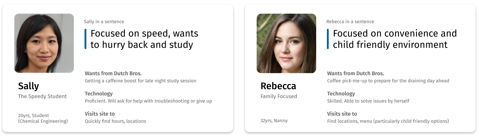

Research
After familiarizing ourselves with the Dutch Bros. website and getting a feel for the company’s goals, we set out to learn about the website’ users and their pain points via a survey.
With user and company needs in hand, we looked for pain points preventing fulfilment of those needs by conducting a usability test targeted towards key tasks and a general web accessibility analysis.
Survey
General understanding of users from demographics to key needs
38 responses
Web Accessibility Analysis
General analysis to find issues that prevent user access
150+ guidelines
Usability Testing
Targeting key tasks to find pain points and deeper insights and verify issues identified by heuristics
8 participants
Define Design Needs
Personas
Based on research data, we created 2 personas to represent our target audience. It is important for Dutch Bros to accommodate patrons who want to be in and out like Sally, as well as patrons who are constantly on their feet and want an oasis in Dutch Bros.
Insights
Time-saving Features Go Unnoticed
Users take much longer than needed to complete key tasks due to overlooking certain time-saving features.
- Buttons without labels mystified users, leading to a 10 second task taking an average of 1.5 minutes.
- When asked to find the age requirement of working at Dutch Bros, users needed an average of 1.5 minutes. Using the existing search bar would reduce it to seconds.
Impossible to navigate
With a mystifying site structure, users are outright unable to complete key tasks, with one participant even stating they would give up in a real situation.
- Users are confused, with a 38% failure rate navigating between the main site and Dutch Bro’s e-commerce site. Users didn’t realize the Dutch Bro’s e-commerce site is a different site altogether rather than being a subsection of the main site.
- 25% of users were unable to find a HQ job opening as the deceptively named “View Openings” button only showed barista openings.
Wrong signal, No signal
Visual noise misleads users, leading to confusion.
- Snack listings look clickable but aren’t, leading users confused when they think they can access nutritional information if they click on the listing.
- Horizontal scrolling worked great for mobile users, but not for desktop users. With a non-conventional trigger and no visual controls, 25% of users were unable to complete the task. as it required a non-standard trigger of a click & drag.
Conclusion
Clearly, convenience and speed were major concerns of users, but the Dutch Bros site had deficiencies that wasted time and prevented easy navigation. How might we streamline users’ ability to accomplish key tasks?
Design
Solutions
As ineffectual visual cues caused wasted time, the redesign would focus on reworking visual cues and the wording of labels. Navigation issues were partially caused by poor marking of site structure. Technical limitations were also a factor as the site had to host key features on 3rd party services. UX can soften these issues by giving users a clear mental model of the site structure, signposting status changes, and providing an easy way to navigate back to the main site.
Reworked visual cues & labels
- Implemented descriptive wording so users have a clear picture of where they’ll go if they click the button
- Targeted overlooked features to add visual emphasis such as increasing the size of the FAQ search bar
- Removed visual cues that made unclickable things seem clickable
Enabled navigation
- Clarified site structure by signposting that Dutch Bros e-commerce is a separate site
- Clearly feature a “back to main site" button on the e-commerce site
- Aggregate all job openings in the same page
Visual Results
Implementing the changes noted above, I revised just the problem areas of the orignal design rather than an overhaul of the whole thing.
Reflection
Working on a UX project with a team for the first time, I really enjoyed the experience. I could trust they would not only deliver on their parts but do it well, and that I could bring any queries to brainstorm solutions together.
This project was a reminder that UX is mindset of continual improvement. Rather than a huge overhaul, this project showed that dozens of “small” UX changes can hugely improve the experience for users and fulfil company goals for the corporation.
If I could work more on this project, I would have wanted to conduct a second round of usability testing—this time on the redesign, to see if metrics like time taken and error rate have improved.